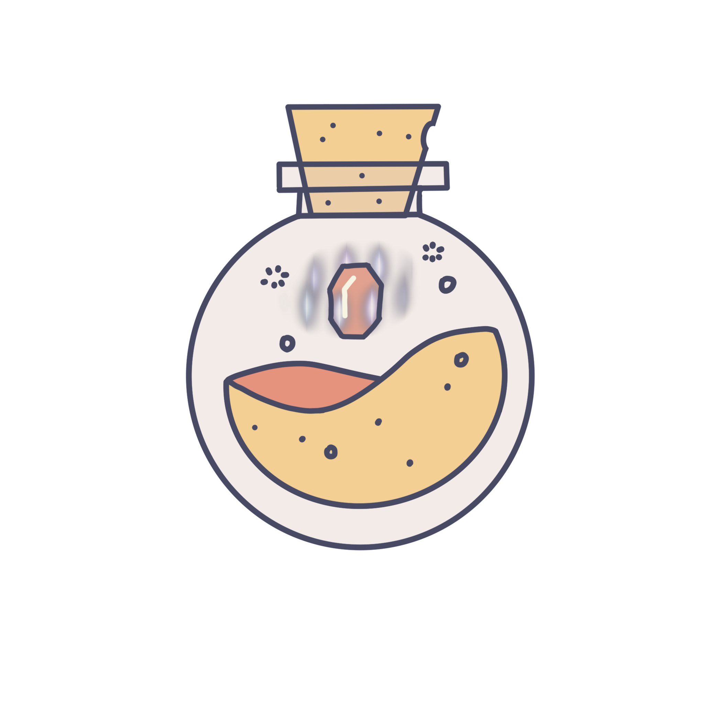

About TechX
Vision: To build a community where anyone can start, grow, or refine their technical skills.
TechX is a CNH Circle K technology-education initiative to provide an environment in which all members can learn new skills and develop their technical experience. We are a team of individuals who have been involved in technology in Circle K International in some form or another. We are familiar with the existing professional development structure in CNH CKI that, while working for many years, does not lend itself nicely to learning practical, technical abilities. Therefore, we hope to kickstart a program that can provide those learning opportunities, beyond just workshops. This Summer 2021 will begin the first set of CNH Circle K technical courses, and it will only expand from there.
